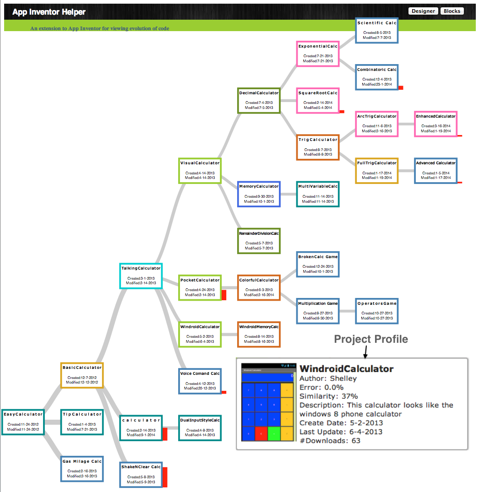
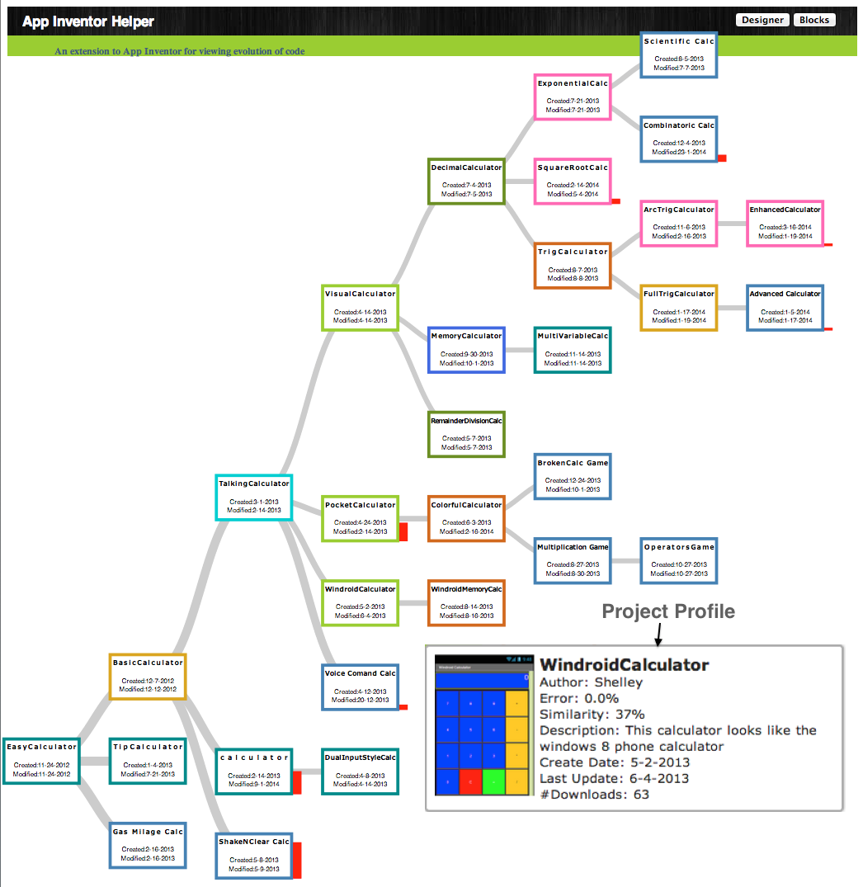

My research interests span the areas of Human-Computer Interaction, Software Engineering, Education and Empirical Evaluation. I develop new strategies, theories, visualizations and prototypes for users. I follow an iterative approach consisting of (1) performing empirical studies to investigate current needs and problems, (2) defining theoretical propositions that address these problems, (3) designing tools that embody the theoretical propositions, and (4) evaluating the tools and the underlying propositions via confirmatory studies. My research includes mixed methods -- from designing and building interactive systems by using qualitative and quantitative methods to investigating user needs, current processes, and tool adoption in the field. While my research and the tools that I build directly help professionals, they reveal users' behaviors and strategies while interacting with such systems and reveal different aspects of how modern programming environments can be designed, developed, and made capable of driving the future design of such systems.
Research Projects:
The goal of this research is to bring the benefits of pair programming to programmers by replacing a programmer with partner agents. This project aims to create a partner agents that is non-judgemental of gender, ethnicity, social and economic status and creates a symbiotic relationship to harness characteristics of humans (domain knowledge, creativity and innovation) and machines (automated techniques) to create powerful and efficient solutions.We are developing a paradigm called Pair Buddy to foster pair programming between the programmer and agents. The proposed research will gather and analyze rich fine-grained qualitative findings that further the state of knowledge about the programmers' collaboration with agents and inform the design guidelines for future collaborative pedagogical software and curriculum. These guidelines will inform the design of the Pair Buddy paradigm. Supported by (NSF CAREER Award, Honorable Mention Award)

Collaborative software development allows collective intelligence but has the core problem of how to optimize the sorting and analysis of a vast array of “information fragments” in order to produce “optimal information” that is meaningful and applicable to a specific goal. We will investigate the use of the past collective information seeking behaviors of individual developers, specifically experts, to reduce the overhead of finding relevant information for new developers working on similar tasks. This research is inspired from the collective intelligence patterns among animals. Most creatures in the wild have developed ways to communicate information between individuals/groups when performing optimal foraging tasks. For example, ants use pheromone trails and stridulation, while honeybees use the celebrated waggle dance to recruit others to a food source. Similar to this behavior, we believe that developers also leave traces of their intelligence (e.g., commit logs), and their foraging behavior among artifacts (within OSS and on the web) that can be captured and utilized. To understand the information seeking and foraging behavior of individuals, we are utilizing Information Foraging Theory - a theory of information seeking that has been applied successfully to diverse domains such as web, interfaces and programming. Supported by ( U.S. Airforce YIP Award, Best Paper Award)
Although gender differences in a technological world receive significant research attention, much of this research and practice aims at how society and education can impact the success and retention of women in computer science. The possibility of gender biases within software, however, has received almost no attention. A method called GenderMag is developed. GenderMag (Gender-Inclusiveness Magnifier) is an inspection method for software practitioners to evaluate and create a gender-inclusive problem-solving software. Currently, we are working on extending the GenderMag method to GenderMag-Collab for supporting pair-programming. We also plan on developing tool to broaden the participation in computer education. Additionally, we are interested in characterizing brain neural response in the same and mixed genders pairs during collaboration on problem-solving task. Finally, utilizing machine learning to identified the differences in brain neural responses in the same and mixed gender dyads during problem solving. This research is in collaboration with Laureate Institute for Brain Research.
Managers are increasingly using online contributions to make hiring decisions. However, it is nontrivial to find relevant information about candidates in large online, global communities. Potential employers, as well as recruiters, are increasingly using the history of public contributions to locate suitable candidates, filter applicants for a position, or inform interview interactions. Literature suggests that both types of information (technical and social skills) are important when assessing developers. We designed Visual Resume to aggregate activity traces across two different types of peer production sites: a code hosting site (GitHub) and a technical Q&A forum (Stack Overflow). It aggregates developer activities across projects and languages to portray their technical and soft skills. More specifically, it extracts histories of commits, issues, comments, programming languages, and projects in GitHub. For Stack Overflow it groups data on answers, questions, comments, and tags. Aggregating activities across online communities can build a more accurate profile, since developers can contribute to multiple projects and forums. This also helps in comparison of contributions across sites as different sites can have different presentation styles. Our scenario-based, formative study found that participants appreciated the ability to compare candidates based on overall summaries, and to drill down to a particular contribution to assess its quality. ( Best Paper Award )
Computer-supported creative tasks—such as writing, graphic design, creating presentations, and some forms of programming— are often exploratory in nature. People often need to build upon and compare multiple ideas, fit them together and save the intermediate steps. Foraging among too many similar variants of the same artifact need more cognitive effort especially for no-vice programmers. We took a first step towards a theory of variation foraging through a qualitative empirical study investigating how novice programmers reuse variants. Based on our findings, we developed a predictive model, PFIS-V, a computational model of foraging that is able to account for multiple similar variants in an information space. Our empirical results show that PFIS-V is up to 25% more accurate than the previous programming computation model in predicting where a forager will navigate in a variationed information space. Based on these studies we found that if we account for complex information organized hierarchically we can increase the accuracy of finding variants and hence developed PFIS-H computational model. ( Best Paper Award)
I am using social network analysis and deep machine learning techniques to understand the socio-technical behavior of programmers. For example, I am investigating how people learn code between their social and technical collaborations. I am also investigating the social behavior of the programmers when they move within and between social and technical sites. The understanding of these will help in designing tools for searching code, which programmers can trust and are based on their social interactions.
Programmers reuse code to increase their productivity, which leads to large fragments of duplicate or near-duplicate code in the code base. The current code clone detection techniques for finding semantic clones utilize Program Dependency Graphs (PDG), which are expensive and resource-intensive. PDG and other clone detection techniques utilize code and have completely ignored the comments - due to ambiguity of English language, but in terms of program comprehension, comments carry the important domain knowledge. utilized with LDA and are equivalent to sophisticated PDG based techniques. One approach would be using comments with LDA to detect clone sets at the file level, as this process is less resource-intensive, and applying PDG based code detection techniques at the function level.
We have developed a theory-based approach called the “Idea Garden” that considers how end-user (non-professionals) programmers generate ideas when learning programming concepts for the first time based on Minimalist theory. It uses an integrated, just-in-time combination of scaffolding for problem-solving strategies, and for programming patterns and concepts. We have developed a generalized architecture to facilitate the inclusion of Idea Gardens into other systems. The Idea Garden approach has considered how EUPs generate ideas when learning programming concepts for the first time based on the diversity of EUPs' problem-solving situations. Hence, the Idea Garden supports EUP environments by providing context-sensitive advice, mini-patterns and problem-solving strategies that help them learn in the context of their own activities. We empirically investigated our prototype in three studies: a formative think-aloud study, a pair of summer camps attended by 42 teens, and a third summer camp study featuring a different environment attended by 48 teens. Our results showed that participants required significantly less in-person help than in a previous camp to learn the same amount of material in the same amount of time. Our studies showed the effectiveness of the Idea Garden's principles and support for different contexts in helping EUPs solve the programming problems that get them “stuck”—across a diversity of problems, information processing and problem-solving styles, cognitive stages, tasks, host IDEs, programming languages, and people.
 It includes understand the foraging behavior
of end user programmer while performing exploratory programming tasks such as program
exploration, program understanding, verification and debugging in context of variations.
My research has supported exploratory programming at different levels; namely,
workspace, file, and online-repositories. My initial research was part of the Exploratory
Programming project, a collaboration involving Carnegie Mellon University,
Oregon State University, University of Nebraska-Lincoln,
and University of Washington. We supported AppInventorHelper
to support exploratory programming at file level and
Pipes Plumber to support exploratory programming at the workspace level.

It includes understand the foraging behavior
of end user programmer while performing exploratory programming tasks such as program
exploration, program understanding, verification and debugging in context of variations.
My research has supported exploratory programming at different levels; namely,
workspace, file, and online-repositories. My initial research was part of the Exploratory
Programming project, a collaboration involving Carnegie Mellon University,
Oregon State University, University of Nebraska-Lincoln,
and University of Washington. We supported AppInventorHelper
to support exploratory programming at file level and
Pipes Plumber to support exploratory programming at the workspace level.


Current Students at North Carolina State University:
Graduate:
- Alex McAuliffe (Computer Science Ph.D., Expected graduation 2026)
- Shandler Mason (Computer Science Ph.D., Expected graduation 2026)
Dissertation Committee Members:
- Aafaq Sabir (Written Prelim Exam)
- Md Rayhanur Rahman (Oral Prelim Exam)
- Amy Isvik (Oral Prelim Exam)
- Kewen Peng (Committtee member)
UnderGraduate:
- Marcus Kim (REU)
- Helen Solomon (REU)
- Afnan Idries (Independent Study)
- Mollie Jordan (Independent Study)
Former Students at the University of Tulsa:
Graduate:
- Peter Robe (Computer Science M.S., Graduated 2021)
- Akash Ghosh (Computer Science M.S., Graduated 2019)
- Abim Sedhain (Computer Science M.S., 2022)
- Jacob Hart (Computer Science M.S., 2023)
Dissertation Committee Members:
- Sami Abuhaimed (Ph.D. 2022)
- Saeid Samadidana (Ph.D. 2019)
- Zenefa Rahaman (Ph.D. 2018)
- Osman Yusel (Ph.D. 2017)
UnderGraduate:
- Jacob AuBuchon (REU 2021, TURC 2021, Computer Science UG)
- Alex McAuliffe (REU 2021, TURC 2021, Computer Science UG)
- Philip Rahal (TURC 2022, Computer Science UG)
- Ronnie Phillips (TURC 2022, Computer Science UG)
- Issa Al Rubaye (TURC 2022, Computer Science UG)
- Marcus Ensley (TURC 2022, Computer Science UG)
- Riley Raash (TURC 2022, Computer Science UG)
- Yao Wang (TURC 2022, Computer Science UG)
- Noura Elnahrawy (Computer Science UG)
- Vaishvi Diwanji (Computer Science UG)
- Grey Bodi (Computer Science UG)
- Jeff Luong (Computer Science UG)
- Devin Pattison (TURC 2021, Computer Science UG)
- Ben Riethmeier (TURC 2021, Computer Science UG)
- Bali Ong (TURC 2020, Computer Gaming and Simulation UG)
- Katherine Kwasny (TURC 2020, Computer Gaming and Simulation UG)
- Jarrow Myers (TURC 2019, Computer Science UG)
- Sam Gurka (TURC 2019, Computer Science UG)
- Yingze Chen (TURC 2019, Computer Science UG)
- Kevin Gerestner (Computer Science/Computer Gaming and Simulation UG)
- Alexandra Bejarano (Computer Science UG, currently Ph.D. student at Colorado School of Mines)
- Caroline Lott (Psychology UG)
- Danny Tapp (Mechanical Engineering UG)
- Van Nguyen (Computer Science UG)
- Yiting Bai (Computer Science UG)
- David Magar (Information Technology UG)
- Michael Sun (Computer Science UG, currently M.S. student at University of California, at Irvine)
- Brooke Shepherd (TURC 2018, Computer Science UG)
- Jiayi Lu (Computer Science UG)
- Philip Gibson (Computer Science UG)
- Cheng Zhou (TURC 2018, Computer Science UG)
- Se Yeon Kim (TURC 2016, Computer Science UG)
- Carlos Martos (Computer Science UG)
- Steven Alfonso Hernandez (Computer Science UG)
- Cao Huynh (Computer Science UG)